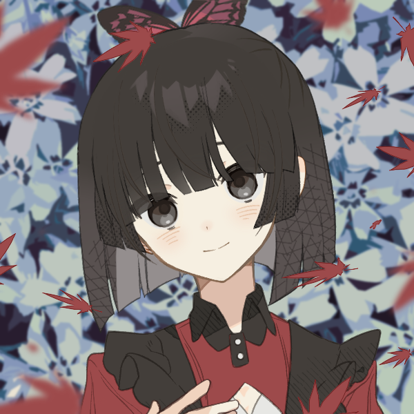

about me

a girl learning to navigate the world.
when given multiple choices, i try to pick the most interesting one, and i would like to encourage others to do the same.
optimize for novelty, optimize for interestingness. live the life you want to live, as it's the only one you'll get.
a girl with a vision.
i aim to leave the world better than i found it, by turning as many of my ideas into reality as i can.
you can just do things. reach heaven by violence, one star at a time.